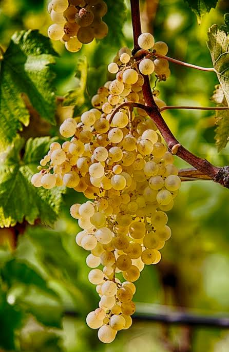

Liqueur
de Chasselas


⟹ Vins & Spiritueux ⟸
La liqueur de chasselas est la version gourmande et festive d’un fruit devenu le symbole du Tarn-et-Garonne : le Chasselas de Moissac, « grain doré » au goût de miel, cultivé sur les coteaux du Bas-Quercy, au nord du département et au sud du Lot.

La culture du chasselas autour de Moissac est ancienne. On l’associe volontiers aux moines de la grande abbaye Saint-Pierre de Moissac, qui auraient favorisé la vigne sur les coteaux. Mais c’est au XIXe siècle que le raisin de table prend son essor, avec l’arrivée du chemin de fer au milieu du siècle, qui permet d’expédier les grappes fraîches vers Paris et Bordeaux.
Après la crise du phylloxéra, les « chasselatiers » replantent et améliorent leurs techniques. Leurs efforts sont récompensés par une reconnaissance de l’appellation par le tribunal civil de Moissac en 1953, puis par l’AOC en 1971 : le Chasselas de Moissac est alors le premier fruit à obtenir une appellation d’origine contrôlée. L’Europe le reconnaît en AOP en 1996.
Dans les années 1930, Moissac devient même une petite station de « cure uvale » : on vient y manger du raisin pour ses vertus supposées, et la ville construit en 1930 un kiosque Art déco, l’Uvarium, sur les bords du Tarn. Le chasselas s’impose comme un produit de santé et de bien-être, riche en vitamines.
L’AOP est exigeante : chaque grappe est ciselée à la main par les chasselatières et chasselatiers, qui retirent un à un les grains abîmés, puis emballée dans du papier de soie. Ce savoir-faire est inscrit depuis 2017 à l’Inventaire du patrimoine culturel immatériel en France, et Moissac est labellisé « Site remarquable du goût » depuis 2003.
Le Chasselas de Moissac n’est pas vinifié : c’est un raisin de table. Pour prolonger le plaisir au-delà de la saison — de fin août à début octobre —, les familles ont toujours transformé une partie de la récolte : jus, confitures, gelées, raisins conservés pour Noël… et liqueurs faites maison, où les grains macèrent dans l’alcool avec du sucre.
Aujourd’hui, plusieurs producteurs de l’aire d’appellation proposent leurs propres apéritifs et liqueurs à base de chasselas, aux côtés de jus pétillants et de gelées. Parmi les créations récentes, le « Quercy des Îles » associe chasselas doré, rhum de Martinique, vanille de Tahiti et pointe de piment d’Espelette, tandis que l’eau-de-vie de chasselas « L’Émoustilleur » se déguste en digestif.
Il faut noter que la liqueur de chasselas ne bénéficie pas d’une appellation propre : seule la grappe fraîche est protégée par l’AOP. Les produits transformés peuvent toutefois être élaborés à partir de Chasselas de Moissac AOP, ce que les producteurs mettent en avant.
Liqueur dorée, douce et fruitée, elle se sert fraîche à l’apéritif ou en digestif, et accompagne volontiers les desserts. Elle prolonge, dans un petit verre, l’automne doré des coteaux de Moissac.
Bon à savoir : au sens de la réglementation européenne, une liqueur doit titrer au moins 15 % vol. et contenir une quantité minimale de sucre ; la recette maison se situe généralement entre 20 et 25 % vol. selon la quantité de sirop ajoutée.
Apéritif au chasselas et au rhum : à l’image du « Quercy des Îles », qui marie chasselas doré, rhum de Martinique, vanille de Tahiti et piment d’Espelette.
Eau-de-vie de chasselas : distillée, sèche et puissante, vendue notamment sous le nom de « L’Émoustilleur », à servir en digestif.
Chasselas à l’eau-de-vie : grains conservés entiers en bocal dans l’alcool sucré, sur le modèle des cerises et prunes à l’eau-de-vie.
Version épicée : avec badiane, clou de girofle ou gingembre, pour une liqueur d’hiver.
Sans alcool : jus de chasselas et pétillant de chasselas, proposés par de nombreux producteurs de l’AOP, ainsi que gelées et confitures.
Les liqueurs et apéritifs de chasselas se trouvent surtout dans l’aire de l’AOP, au nord du Tarn-et-Garonne.
Moissac capitale du chasselas, avec son abbaye, son Uvarium et sa Fête du Chasselas en septembre ; boutiques et office de tourisme mettent en avant les produits dérivés.
Saint-Paul-d’Espis producteurs de Chasselas de Moissac AOP proposant en vente directe jus, gelées et apéritifs.
Lauzerte et Saint-Amans-de-Pellagal au cœur du Quercy blanc, fermes ouvertes à la visite avec chasselas, jus et pétillant de chasselas.
Marchés de Moissac et de Montauban en saison (fin août à octobre), où les chasselatiers vendent raisins et produits transformés.